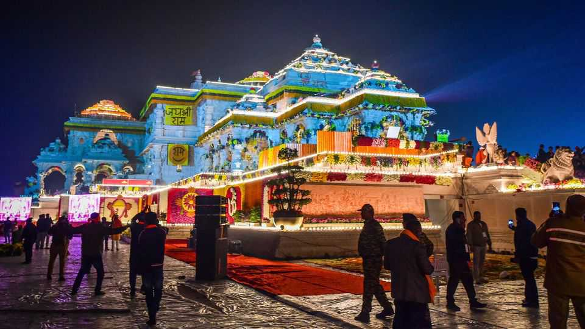

A temple scandal rocks India’s ruling party
One of Narendra Modi’s proudest achievements is under scrutiny

Aug 6th 2026
On July 31st Pappu Yadav arrived at India’s parliament in Delhi dressed as a Hindu priest and armed with a donation box. The independent MP sat near the entrance to the building. One by one opposition MPs, including Rahul Gandhi, their leader, stepped up to drop money in the box. But on each occasion the fake priest snatched the cash, earning wild cheers from a crowd. The satirical skit was livelier than most parliamentary discussions. Mr Yadav and the others were drawing attention to allegations of large-scale theft at the Ram temple in Ayodhya, in Uttar Pradesh, India’s most populous state.
Staff at the temple, which receives millions of visitors each year, have been accused of siphoning donations from devotees. Some of the alleged theft has been confirmed in a government report. The scale of the scheme is still being investigated, but some reports suggest the loot could exceed 70m rupees ($739,550). Abhishek Upadhyay, whose media outlet Top Secret first carried the allegations in early June, says the rot runs deeper. He claims a whistleblower has shared information with investigators alleging corruption in the process of building the temple (construction costs, he claims, ballooned from a projected 8bn rupees to 22bn by the time it opened in 2024).
The hullabaloo is embarrassing for Narendra Modi’s Bharatiya Janata Party (BJP), which governs India and Uttar Pradesh. The party prides itself on probity, and the temple is its signature achievement: the culmination of a decades-long quest to build a monument on the spot where many Hindus believe the god Ram was born. A 16th-century mosque that stood there was destroyed in 1992 when a rally at its gates descended into a riot. In 2019 the Supreme Court granted Hindus possession of the site (Muslims were offered land nearby for a new mosque). When a temple was finally consecrated there in 2024, Mr Modi took part in the rites.
The temple’s affairs are run by a private trust whose members include nominees of the central and state governments. It is an unusual arrangement. Most big Indian temples are run with more direct involvement from the state bureaucracy, in part to clamp down on graft. The trust has lacked professional expertise and been run like a family business, Mr Upadhyay argues.
The BJP has responded poorly. Mr Modi, long the face of the temple project, has said nothing about the issue. Yogi Adityanath, Uttar Pradesh’s chief minister, has acknowledged the affair has “hurt devotees” but has also attacked the opposition for politicising it. His government formed a special investigation team. Its preliminary report, released on June 23rd, confirmed at least 70 instances of theft, abetted by lax security and shoddy governance. The findings prompted the resignations of two members of the trust. But that has not restored the faith of devotees: donations to the temple have collapsed.
Uttar Pradesh is due to hold state elections next year. These will serve as some gauge of the BJP’s popularity. One recent survey found that nearly half the voters in the state would weigh the temple controversy when casting their ballots.
India’s government is still recuperating from mass protests over leaked exam papers, led by youngsters who styled themselves the “Cockroach Janta Party” and forced the education minister to resign. More protests came on August 4th over a decision to make ethanol-blended petrol the country’s standard fuel, which drivers fear will ruin their engines. On August 3rd the party got a taste of what all this turmoil could mean at the ballot box. In a by-election for a seat in the eastern state of Bihar, which it had held for three decades, the BJP was trounced by a political upstart. ■
Stay on top of our India coverage by signing up to Essential India, our free weekly newsletter.